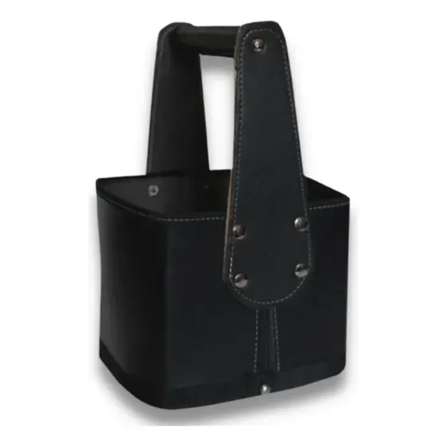
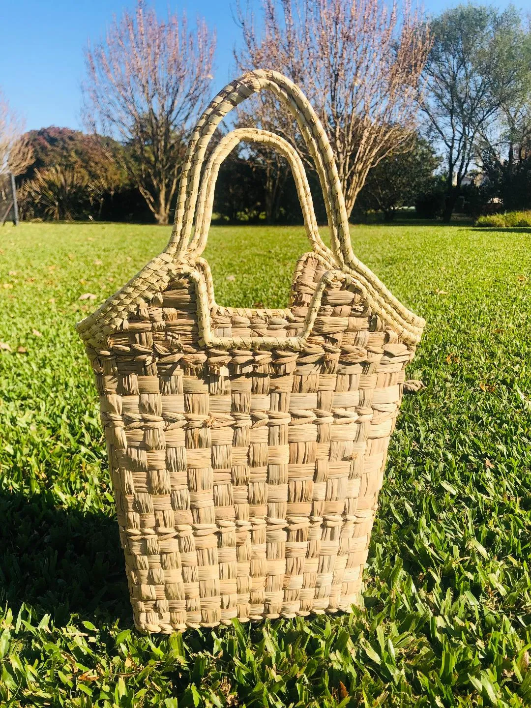

Canasto de cuero
Cuero calidad premium para llevar tu equipo matero

Canasto Eco-Cuero
Canasto de Eco-Cuero, con excelentes terminaciones

Canasto de Mimbre
Canasto de mimbre. Ideal para tener en casa.

Porta mate para auto
Ideal para llevar el mate en el auto.